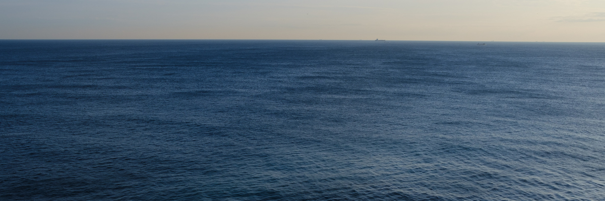

沼口 寛樹
— Numaguchi HirokiEducation
名古屋大学 大学院情報学研究科 数理情報学専攻 博士後期課程
Ph.D. Student, Dept. of Mathematical Informatics, Graduate School of Informatics, Nagoya University
東京理科大学 大学院理学研究科 応用数学専攻 修士課程
M.S. in Applied Mathematics, Graduate School of Science, Tokyo University of Science
東京理科大学 理学部第一部 応用数学科
B.S. in Applied Mathematics, Faculty of Science Division I, Tokyo University of Science
東京都立日比谷高等学校
Fellowships & Awards
TokAI BOOST：東海国立大学機構 名古屋大学 次世代AI人材育成事業
JST 国家戦略分野の若手研究者及び博士後期課程学生の育成事業 次世代AI人材育成プログラム（博士後期課程学生支援）
TokAI BOOST: THERS Nagoya University, Program for Fostering Next Generation AI Professionals
日本学生支援機構 第一種奨学金 特に優れた業績による返還免除（全額免除）
JASSO Type I Scholarship, Full Exemption from Repayment for Outstanding Achievement
Publications (selected) all (researchmap/publications) →
Presentations (selected) all (researchmap/presentations) →
総積卸し時間最小化を目的とするキャリアカー積載計画問題に対する厳密解法
浅野翼, 沼口寛樹, 高田陽介, 柳浦睦憲 · 日本オペレーションズ・リサーチ学会 2026年春季大会
グループ化を考慮した二次元ストリップパッキング問題
任偉林, 沼口寛樹, 胡艶楠, 橋本英樹 · 日本オペレーションズ・リサーチ学会 2025年春季研究発表会
Qualifications
Duolingo English Test 105 CEFR B2
Works